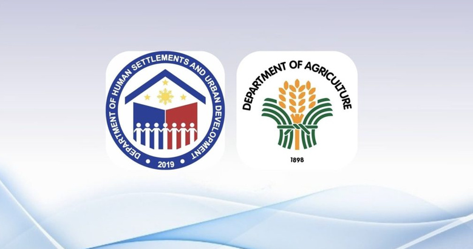

Gallery
Past community projects and activities related to water scarcity and drought management.

DSWD provides community water depot in Quezon amid El Niño

DSWD KALAHI-CIDSS showcases innovative water solution to
strengthen community preparedness against El Niño in Masbate

DHSUD, DA advance community gardens for El Niño